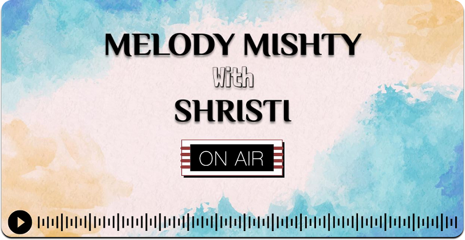

Radio
2020
To create your own Radio show reporting about a topic of interest. It has to be something factual & should include some interesting information about the topic.
I created a radio show named 'Melody Mishty with Shristi'. As I am a book lover. I titled the episode 'Book of Life' where I delved into books that change our lives. I focused on the book, "The Life-Changing Magic of Tidying Up" by Marie Kondo. I have been familiar with the concept of cleanliness from a young age as my grandmother was strict and disciplined about it. Hence, choosing this particular book by Marie Kondo was the best choice.